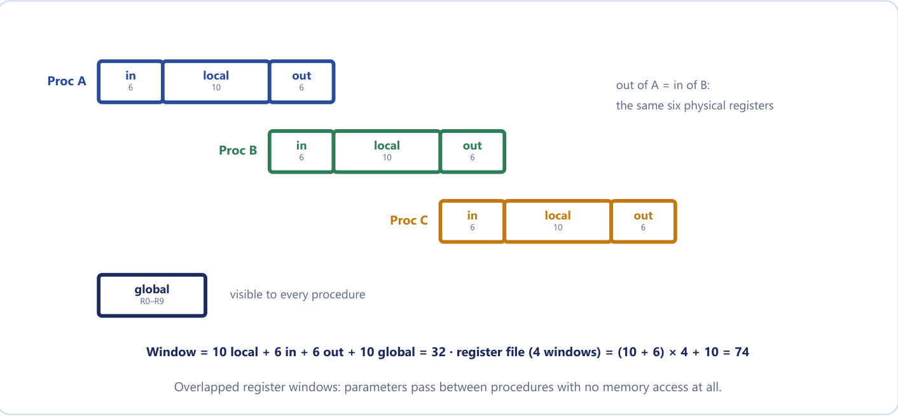
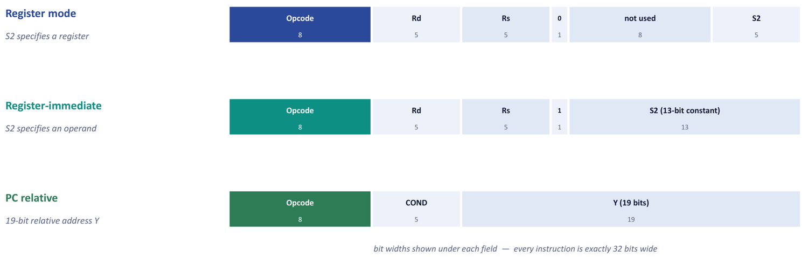
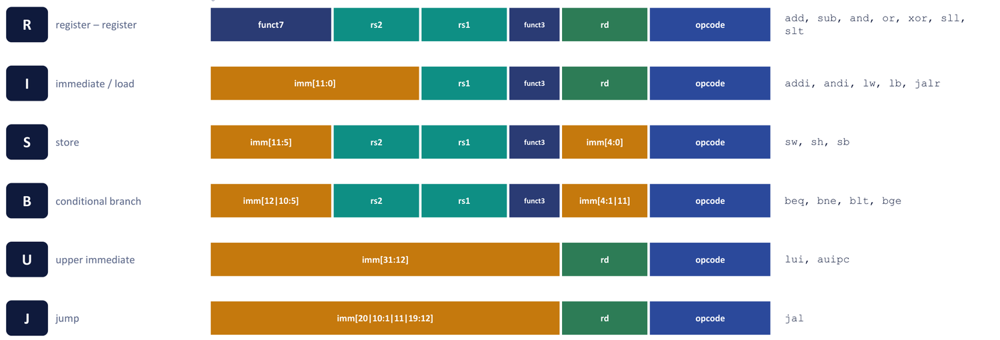

Chapter 16: RISC and CISC¶
Two answers to the question "how should an instruction set be designed?", and the equation that decides which one wins
Every processor has to answer the same question: how do we turn a stream of instructions into finished work as fast as possible? The designs of the last two chapters gave part of the answer: registers keep values close to the ALU, stacks and addressing modes let programs reach their data cheaply. This chapter asks about the instruction set itself. Should each instruction be a rich command that does a great deal of work, so that programs are short? Or should each instruction be small and simple, so that the hardware can execute one every clock cycle without pausing? The first answer is the complex instruction set computer (CISC). The second is the reduced instruction set computer (RISC).
We shall see that the two philosophies disagree about where complexity should live. CISC puts it in the hardware, and RISC puts it in the compiler. We then study the features that make RISC work (load/store architecture, a large register file, overlapped register windows, fixed instruction formats, pipelining) through two real examples, the Berkeley RISC I and the open-standard RISC-V, encoding instructions by hand. Finally we find out what actually decides the argument, the CPU-time equation, and see where the debate ended up. The slogan to hold on to is this: RISC moves work from the hardware to the compiler; CISC moves work from the compiler to the hardware. Every row of the comparison table is a consequence of that one decision.
What you will learn
- List the characteristics of CISC and of RISC and say why each design choice follows from the aim.
- Explain the load/store architecture and why it suits pipelining.
- Compute the window size and register-file size of an overlapped-register-window machine, and explain how parameters pass without touching memory.
- Read the three Berkeley RISC I formats and the six RISC-V formats, and encode RISC-V instructions by hand.
- Compare RISC and CISC across the main design dimensions.
- Use CPU time = instruction count × CPI × clock period to compare machines, and explain why fewer instructions do not mean a faster program.
16.1 Two philosophies of instruction set¶
Over the years instruction sets grew to hundreds of instructions, many addressing modes and variable-length formats. Part of the reason was to bring machine language closer to high-level languages: the aim of the CISC designers was to provide a single machine instruction for each statement of a high-level language, closing the semantic gap between programmer and machine. In the 1970s this was a sensible aim. Memory was tiny and expensive, and much code was written by hand in assembly language. Both facts push the same way: make each instruction do as much as possible, because fewer instructions mean a smaller program in a smaller memory, and less typing for the programmer. A single VAX instruction could evaluate a polynomial or move a whole string.
In the early 1980s studies of real programs showed that a few simple instructions accounted for almost all the execution time, and that the complex instructions were seldom used. This led to the RISC: a small, simple instruction set that can be executed very fast. The concept is an attempt to reduce execution time by simplifying the instruction set. Think of the master chef with one enormous multi-tool that can, in a single motion, chop, mix and plate: fewer motions, but the tool is heavy, slow and hard to build. RISC is the assembly line of workers each doing one tiny, identical step. It needs more steps (bigger code), but each is quick and predictable, and the line, the pipeline, keeps every station busy. The historic bet RISC made was that many simple steps executed at full speed beat a few complex steps that stall.
Neither philosophy is "bad design". CISC was the right answer to the constraints of the 1970s. RISC became the right answer once memory was cheap, compilers were strong, and pipelining made regularity worth more than density.
16.2 CISC: the complex instruction set computer¶
The characteristics of CISC are the following.
- A large number of instructions, typically 100 to 250.
- Some instructions that perform specialised tasks and are used infrequently.
- A large variety of addressing modes, typically 5 to 20.
- Variable-length instruction formats.
- Instructions that manipulate operands in memory.
- Usually microprogrammed control.
Classic examples are the DEC VAX, the IBM 370 and the Motorola 68000, and the Intel x86 family is the CISC architecture still in use today. These choices have consequences. Variable length means that you cannot find instruction n + 1 until you have decoded instruction n. Memory operands mean that one instruction may need as many as three memory references (two sources and a destination). And with hundreds of instructions, hardwired control becomes impractical, so CISC machines use microprogrammed control, in which a control memory interprets each complex instruction as a sequence of simple steps. The aim of the whole design is to reduce program (code) size and to make the hardware, rather than the compiler, do the complex work. The cost, slow, irregular, multi-cycle hardware, became the dominant concern only when memory got cheap and compilers got good.
16.3 RISC: characteristics¶
The course text lists seven major characteristics of RISC.
- Relatively few instructions.
- Relatively few addressing modes.
- Memory access limited to load and store instructions.
- All operations done within the registers of the CPU.
- Fixed-length, easily decoded instruction format.
- Single-cycle instruction execution.
- Hardwired rather than microprogrammed control.
Four further characteristics are commonly attributed to RISC: a relatively large number of registers in the processor unit; the use of overlapped register windows to speed up procedure call and return; an efficient instruction pipeline; and compiler support for efficient translation of high-level language programs. Typical examples are ARM, MIPS, SPARC, RISC-V and the Berkeley RISC I.
A RISC instruction is like a single short word, but the machine says one every clock tick without pausing. The compiler does the packing instead: what a CISC machine did in one complex instruction, a RISC compiler does in three simple ones that each finish in a cycle. Fewer kinds of thing to build means that the ones you do build can be made very fast.
Why fixed length matters so much
If every instruction is the same width, and the opcode and register fields always sit in the same bit positions, the control unit can decode the operation and read the register file simultaneously, before it even knows what the instruction is. Variable-length CISC cannot do this: it must find where the instruction ends before it can find the next one.
16.4 Load/store architecture¶
In a RISC processor only LOAD and STORE access memory. Every arithmetic and logic operation reads its operands from registers and writes its result to a register. The contrast is easy to see on one operation.
Example 16.1: One CISC instruction against three RISC instructions
Problem. Add the memory words addressed by R2 and R3 and put the sum in R1, first on a CISC machine that allows memory operands and then on a load/store machine.
Working and answer.
CISC (one instruction):
ADD R1, [R2], [R3] two memory reads, one add;
variable, multi-cycle timing
RISC (three instructions):
LOAD R4, [R2] 1 memory read
LOAD R5, [R3] 1 memory read
ADD R1, R4, R5 registers only
The RISC version is three instructions instead of one, but each is simple, with predictable, single-cycle timing.
Why is this the key to pipelining? A pipeline runs smoothly only if every instruction takes the same shape and the same time. An instruction that might make two memory accesses stalls the pipeline unpredictably. By confining memory traffic to two instruction types, RISC makes every other instruction a clean register-to-register operation that completes in one cycle, so the pipeline never has to guess. A good picture is the kitchen: the CISC chef reaches into the pantry mid-recipe whenever an ingredient is needed; the RISC chef brings everything to the counter first (LOAD), cooks entirely at the counter, and puts the finished dish away at the end (STORE). A consequence is that RISC machines need many registers, because operands must be in registers, and that is why the large register file belongs on the list of RISC characteristics.
Example 16.2: X = (A + B) × (C + D) on a load/store machine
Problem. Write the program for X = (A + B) × (C + D) using only LOAD, STORE and register-to-register ADD and MUL.
Working. Operands must be loaded first, all the arithmetic is done in registers, and the result is stored at the end.
LOAD R1, A
LOAD R2, B
ADD R1, R1, R2 R1 ← A + B
LOAD R2, C
LOAD R3, D
ADD R2, R2, R3 R2 ← C + D
MUL R1, R1, R2 R1 ← (A + B) × (C + D)
STORE X, R1
Answer. Eight instructions, five of which touch memory (four loads and one store). Compare the three-address CISC-style program of Chapter 14, which is three instructions long but with memory operands in every one.
16.5 Why RISC pipelines well¶
A pipeline divides the execution of an instruction into segments, such as fetch, decode, execute, memory access and write-back, and overlaps the segments of successive instructions, like a laundry in which the second load goes into the washer as soon as the first moves to the dryer. Three consequences are the whole of the arithmetic.
- The clock period \(t_p\) is set by the slowest segment, plus any delay in the latches between segments. Speeding up a segment is wasted unless it is the slow one.
- The first instruction still has to pass through all k segments, which costs k − 1 extra clock periods before the pipeline is full. After that one instruction finishes every clock period. So n instructions take \((k + n - 1)\,t_p\).
- The speedup over an unpipelined machine, which takes \(n\,t_n\), is the ratio of the two times, and as n grows it approaches \(t_n/t_p\) but never quite reaches it.
Example 16.3: A five-segment pipeline
Problem. A processor takes 60 ns to execute one instruction without pipelining. It is reorganised into a five-segment pipeline with a clock period of 14 ns. For 150 instructions, find (i) the time without pipelining, (ii) the time with pipelining, (iii) the speedup and (iv) the maximum speedup the pipeline could approach.
Working.
without pipelining: t = n × tn = 150 × 60 = 9000 ns
with pipelining: t = (k + n - 1) × tp
= (5 + 150 - 1) × 14 = 154 × 14 = 2156 ns
speedup S = 9000 / 2156 = 4.17
maximum Smax = tn / tp = 60 / 14 = 4.29
Answer. 9000 ns without, 2156 ns with, a speedup of about 4.17 against a ceiling of 4.29. The first instruction costs k − 1 = 4 extra periods; after that one instruction completes every period, which is why the speedup is already close to the ceiling for 150 instructions.
Example 16.4: A space-time diagram
Problem. Draw the space-time diagram for a four-segment pipeline processing six tasks, and state the number of clock cycles.
Working. Each task moves one segment to the right at every clock pulse, so the six tasks fill the pipeline on a diagonal.
| Segment | 1 | 2 | 3 | 4 | 5 | 6 | 7 | 8 | 9 |
|---|---|---|---|---|---|---|---|---|---|
| 1 | T1 | T2 | T3 | T4 | T5 | T6 | |||
| 2 | T1 | T2 | T3 | T4 | T5 | T6 | |||
| 3 | T1 | T2 | T3 | T4 | T5 | T6 | |||
| 4 | T1 | T2 | T3 | T4 | T5 | T6 |
Answer. The last task leaves segment 4 at clock pulse 9, which agrees with k + n − 1 = 4 + 6 − 1 = 9 cycles.
Example 16.5: An unbalanced pipeline
Problem. A processor has four pipeline segments with delays 8, 6, 10 and 7 ns; each latch adds 1 ns. Without pipelining an instruction takes the sum of the segment delays. For 1000 instructions find the clock period, the two times, the speedup, the efficiency and the throughput.
Working. The clock period is the slowest segment plus the latch: \(t_p = 10 + 1 = 11\) ns. Without pipelining \(t_n = 8 + 6 + 10 + 7 = 31\) ns per instruction, so 1000 instructions take 31 000 ns. With pipelining the time is \((4 + 1000 - 1) \times 11 = 1003 \times 11 = 11\,033\) ns. The speedup is \(31\,000 / 11\,033 = 2.81\) against a ceiling of \(31/11 = 2.82\). The efficiency is \(S/k = 2.81/4 = 70.2\%\), and the throughput is \(1000/11\,033\) instructions per ns, about 90.6 instructions per microsecond.
Answer. 11 ns; 31 000 ns; 11 033 ns; 2.81; 70.2%; about 90.6 instructions per microsecond.
The speedup is well short of 4 even though there are four segments, and the reason is plain in the numbers: the segments are unbalanced. The 10 ns stage sets the clock while the 6 ns stage idles for 5 ns of every period. Splitting the slowest segment, not the fastest, is what would help.
This is exactly why RISC suits pipelining. Because every instruction has the same length and a small number of formats, the stages fetch, decode, execute, memory and write-back take predictable time and can overlap. Fixed formats simplify decoding; the load/store model isolates memory access to one stage; single-cycle execution avoids long stalls. The result is close to one instruction completed per clock cycle once the pipeline is full. Variable-length CISC instructions of different execution times make a uniform pipeline hard.
16.6 Overlapped register windows¶
Procedure calls and returns are among the most frequent and most expensive operations in high-level-language programs, because parameters and local variables are normally pushed to a stack in memory. The Berkeley RISC I avoids this memory traffic with overlapped register windows.
The CPU has a large register file. At any moment a procedure sees only a window of it: its local registers, an input set (the "low" registers) and an output set (the "high" registers), plus global registers shared by all procedures. The windows of adjacent procedures overlap: the output registers of the caller are physically the same as the input registers of the callee. A call therefore passes parameters with no memory access at all: the caller places the parameters in its output registers, and the current window pointer (CWP) is moved on to the next window. Returning is just moving the pointer back. A desk analogy helps: each procedure has a desk, adjacent desks are pushed together so that they share an overlapping strip, and the caller puts the parameters on the shared strip while the callee simply reaches for what is already in front of it.

Let there be G global registers, L local registers per window, C registers common to two adjacent windows (the overlap) and W windows. Then
A procedure sees L + 2C + G registers at a time (its locals, an input set, an output set and the globals), but the whole file is smaller than W times that because neighbouring windows share their C overlapping registers: each new window adds only L + C registers.
Example 16.6: The Berkeley RISC I register file
Problem. A RISC machine has G = 10 global registers, L = 10 local registers per window, C = 6 registers common to two windows and W = 4 windows. Find the window size and the total size of the register file.
Working.
window size = L + 2C + G = 10 + 2(6) + 10 = 32 registers
register file = (L + C)W + G = (10 + 6)(4) + 10 = 74 registers
Answer. The window is 32 registers and the register file is 74. Parameters are passed by overlap, not by copying. The real Berkeley RISC I used W = 8 windows, giving (10 + 6) × 8 + 10 = 138 registers; the 32 registers visible at a time are those addressed by a 5-bit register field.
For W = 4 the 74 registers R0 to R73 are arranged as follows. R0 to R9 are the globals. Procedure A has its input registers in R10 to R15, its locals in R16 to R25 and its output registers in R26 to R31. The same R26 to R31 are the input registers of B, whose locals are R32 to R41 and whose outputs are R42 to R47, which are the inputs of C, and so on.
| Procedure | Input (low) | Local | Output (high) |
|---|---|---|---|
| A | R10 to R15 | R16 to R25 | R26 to R31 |
| B | R26 to R31 | R32 to R41 | R42 to R47 |
| C | R42 to R47 | R48 to R57 | R58 to R63 |
| D | R58 to R63 | R64 to R73 | R10 to R15 |
Example 16.7: Passing parameters by overlap
Problem. In the layout above, procedure A calls B. Where does A put its parameters and where does B read them? Why are the windows arranged in a circle, and why does a RISC machine still need a memory stack?
Working. Registers R26 to R31 are common to A and B. A writes its parameters into R26 to R31, which are its output (high) registers; when B is activated, those same physical registers are B's input (low) registers. B's own local variables live in R32 to R41, and R42 to R47 are reserved for a further call to C. In the layout the last window (D) overlaps back onto the first (A). The window set is a ring, so the current-window pointer can keep advancing on every call and wrap around, until it catches its own tail, at which point the hardware or the operating system must save the oldest window to memory (a window overflow); it is restored on the way back.
Answer. A writes the parameters in R26 to R31 and B reads them from the same registers, with no copying and no memory access. The ring means calls nested deeper than W force the oldest window to memory. A memory stack is still needed for deeper nesting, recursion, large local arrays and interrupts.
Example 16.8: Another machine
Problem. A machine has G = 8, L = 12, C = 8 and W = 6. Find the window size and the register-file size.
Working. Window = 12 + 2(8) + 8 = 36. File = (12 + 8)(6) + 8 = 128.
Answer. 36 registers visible at a time; 128 registers in total.
16.7 A real RISC: the Berkeley RISC I¶
The Berkeley RISC I was one of the first projects to demonstrate the RISC idea. It is a 32-bit processor with a 32-bit instruction format, 31 instructions, three addressing modes and a register file of 138 registers: 10 global registers plus 8 windows, each of which contributes 16 new registers to the file (every window sees 32). Its instructions come in only three formats, each exactly 32 bits wide (Figure 16.2).

In register mode the fields are an 8-bit opcode, Rd (5 bits, the destination register), Rs (5 bits, the first source), a 1-bit flag set to 0, 8 unused bits and S2 (5 bits), a second source register. In register-immediate mode the flag is 1 and the last 13 bits form S2, a 13-bit constant: S2 specifies an operand rather than a register. In the PC-relative format the fields are the 8-bit opcode, COND (5 bits, the branch condition) and Y, a 19-bit relative address.
Example 16.9: Checking the RISC I formats
Problem. Check that each of the three formats is 32 bits, and explain what the fixed positions of Rd and Rs buy.
Working. Register mode: 8 + 5 + 5 + 1 + 8 + 5 = 32. Register-immediate: 8 + 5 + 5 + 1 + 13 = 32. PC relative: 8 + 5 + 19 = 32. Rd and Rs always sit in the same bit positions, so the register file can be read at the same time as the opcode is decoded, before the control unit even knows which instruction it has.
There is a second trick. R0 is hard-wired to zero, so ADD R0, R21, R22 is a move (the register-mode add of R0 and one register) and ADD R0, #150, R2 is a load-immediate: no extra instructions are needed for them.
Answer. 32 bits in every case; the fixed fields allow decode and register read in parallel; R0 = 0 gives move and load-immediate for free.
The instructions of RISC I fall into the usual three families: data manipulation, data transfer and program control, and only the load and store instructions access memory. Having three formats and only three addressing modes is what makes the decoding simple enough for hardwired control.
16.8 RISC-V: an open RISC¶
RISC-V (pronounced "risk five") is a RISC instruction set architecture developed at UC Berkeley from 2010, the fifth in the line that began with the Berkeley RISC I. Its defining feature is not technical but legal: the specification is an open standard that anyone may implement, free of licence fees. To build an x86 chip you need Intel's permission; to build an ARM chip you pay a licence fee and royalties. RISC-V is a published document, like the rules of chess, so a student project, a research prototype and a commercial data-centre chip can all run the same compiled binary. That is why it spread through universities first and industry afterwards. SiFive and Western Digital ship RISC-V cores commercially, and NVIDIA uses RISC-V for microcontrollers inside its GPUs; in India the SHAKTI processors from IIT Madras and the VEGA processors from C-DAC are both RISC-V based.
Its design shows the RISC principles in a modern form. It is a load/store architecture: only loads and stores touch memory. Every base instruction is exactly 32 bits, with fields in fixed positions. There are 32 general-purpose registers, x0 to x31, and x0 is hard-wired to zero. And there are no condition flags: no carry, zero or sign register. Comparison is done inside the branch instruction itself, which makes the pipeline simpler.
RISC-V is also modular: a processor must implement one base integer instruction set and may add any of the standard extensions, and the name of the chip tells you what it implements.
| Letter | Name | What it adds |
|---|---|---|
| I | Base integer | the mandatory base: 47 instructions (load/store, add, subtract, logic, shift, compare, branch, jump); RV32I has 32-bit registers, RV64I has 64-bit |
| M | Multiply and divide | integer multiply, divide and remainder |
| A | Atomic | atomic read-modify-write, for multicore synchronisation |
| F | Single float | 32-bit IEEE floating point, with 32 float registers f0 to f31 |
| D | Double float | 64-bit IEEE floating point |
| C | Compressed | 16-bit forms of the commonest instructions, roughly 25 to 30% smaller code |
| V | Vector | vector (SIMD) operations for data-parallel work |
RV32I is a 32-bit base integer machine and nothing else, which is perfect for a tiny embedded controller; RV64GC is 64-bit, where G is shorthand for IMAFD, plus C, and is the profile that a Linux-capable application processor implements. The 32 integer registers have conventional names that tell the compiler and the programmer how to use them.
| Register | Name | Role |
|---|---|---|
x0 |
zero | always 0; writes are discarded |
x1 |
ra | return address |
x2 |
sp | stack pointer |
x3, x4 |
gp, tp | global pointer, thread pointer |
x5 to x7 |
t0 to t2 | temporaries |
x8, x9 |
s0, s1 | saved registers (s0 is also the frame pointer) |
x10, x11 |
a0, a1 | arguments and return values |
x12 to x17 |
a2 to a7 | arguments |
x18 to x27 |
s2 to s11 | saved registers |
x28 to x31 |
t3 to t6 | temporaries |
Why hard-wire x0 to zero? One register buys a dozen free instructions: no separate move, no-op or "load zero" is needed. add x5, x6, x0 is a move, addi x0, x0, 0 is a no-op, and beq x7, x0, L is "branch if zero".
The six formats¶
Every base instruction is 32 bits. The opcode is always bits 6 to 0, rd always bits 11 to 7, rs1 always bits 19 to 15 and rs2 always bits 24 to 20, so the register file can be read before decoding has even finished.

| Format | Use | Typical instructions |
|---|---|---|
| R | register to register | add, sub, and, or, xor, sll, slt |
| I | immediate and load | addi, andi, lw, lb, jalr |
| S | store | sw, sh, sb |
| B | conditional branch | beq, bne, blt, bge |
| U | upper immediate | lui, auipc |
| J | jump | jal |
Why six formats and not one? The register fields never move; only the immediate is packed differently, because a store needs its immediate split around the register fields, and a branch needs a 13-bit signed offset. The scrambled bit order in B and J looks perverse but is deliberate: it keeps each immediate bit in the same wire position across formats, so the sign-extension hardware is shared.
Encoding by hand¶
To encode an instruction, write each field as a binary number of the right width, concatenate them from bit 31 down to bit 0 in the format's order, and regroup in fours to read off the hexadecimal word.
Example 16.10: Encode add x5, x6, x7
Problem. Give the 32-bit machine code, in binary and hex, for add x5, x6, x7. (R-type: opcode = 0110011, funct3 = 000, funct7 = 0000000.)
Working. rd = x5 = 00101, rs1 = x6 = 00110, rs2 = x7 = 00111. In the order funct7, rs2, rs1, funct3, rd, opcode:
funct7 rs2 rs1 f3 rd opcode
0000000 00111 00110 000 00101 0110011
= 0000 0000 0111 0011 0000 0010 1011 0011
Answer. 0x007302B3.
Example 16.11: Encode addi x5, x6, 100
Problem. Encode addi x5, x6, 100. (I-type: opcode = 0010011, funct3 = 000.)
Working. imm = 100 = 000001100100 (12 bits), rs1 = x6 = 00110, rd = x5 = 00101.
imm[11:0] rs1 f3 rd opcode
000001100100 00110 000 00101 0010011
= 0000 0110 0100 0011 0000 0010 1001 0011
Answer. 0x06430293.
Example 16.12: Encode sub, and decode a hex word
Problem. (a) Encode sub x10, x11, x12 (funct7 = 0100000, funct3 = 000, opcode 0110011). (b) What does add x0, x1, x2 do?
Working. (a) rd = x10 = 01010, rs1 = x11 = 01011, rs2 = x12 = 01100: 0100000 01100 01011 000 01010 0110011 = 0100 0000 1100 0101 1000 0101 0011 0011. (b) The destination is x0, which discards writes, so the instruction does nothing: it is a no-op.
Answer. (a) 0x40C58533. (b) A no-op.
To decode a word, reverse the process: for 0x007302B3 = 0000000 00111 00110 000 00101 0110011, the opcode 0110011 says R-type, rd = 5, rs1 = 6, rs2 = 7, funct3 = 0 and funct7 = 0: add x5, x6, x7.
Example 16.13: A short RISC-V program
Problem. The C statement z = (x + y) * 4 has x at 0(sp), y at 4(sp) and z at 8(sp). Write RISC-V code for it, naming the format of each instruction.
Working. Load both operands, add, multiply by 4 by shifting left twice, store.
lw t0, 0(sp) # load x (I-type) 0x00012283
lw t1, 4(sp) # load y (I-type) 0x00412303
add t2, t0, t1 # t2 = x + y (R-type) 0x006283B3
slli t2, t2, 2 # multiply by 4 (I-type) 0x00239393
sw t2, 8(sp) # store z (S-type) 0x00712423
Answer. Five instructions where a CISC machine might use two. Each, though, is a fixed 32 bits and finishes in a single pipeline stage, which is the RISC bargain in five lines. Notice what is not there: no instruction reads memory except lw and sw, there is no multiply (shifting left by 2 multiplies by 4 for free), and nothing sets a flag.
16.9 RISC against CISC¶
The following table collects the points of comparison. Learn it as a set of matched pairs, one row per difference, and remember the one sentence that explains every row.
| Dimension | RISC | CISC |
|---|---|---|
| Number of instructions | few, typically under 100 | many, typically 100 to 250 |
| Instruction length | fixed, all the same width (e.g. 32 bits) | variable (1 to 15 bytes on x86) |
| Execution | single cycle per instruction, about CPI = 1 | several to many cycles; varies by instruction |
| Memory access | only LOAD and STORE | most instructions may use memory operands |
| Addressing modes | few, typically 3 to 5 | many, typically 5 to 20 |
| Control unit | hardwired | microprogrammed |
| Registers | many (32 or more, windows) | few (8 to 16) |
| Code size | larger: more instructions per task | smaller: denser encoding |
| Where the complexity goes | into the compiler | into the hardware or microcode |
| Pipelining | easy: regular format, uniform timing | harder: irregular length and timing |
| Examples | ARM, MIPS, SPARC, RISC-V, Berkeley RISC I | Intel x86, DEC VAX, IBM 370, Motorola 68000 |
A RISC processor may also be more energy-efficient per instruction, which is a key reason ARM dominates mobile devices. A fixed-length regular format needs simpler decode logic and no microcode ROM, so fewer transistors switch per instruction and less energy is used. For a battery-powered device that matters far more than raw peak speed ever did.
16.10 The CPU-time equation¶
"Fewer instructions" does not by itself mean a faster program. The time a program spends in the CPU is the product of three factors:
| Factor | Depends on | RISC effect |
|---|---|---|
| Instruction count | program, compiler, instruction set | rises (simpler instructions, more of them) |
| CPI | CPU organization (pipelining, control) | falls towards 1 |
| Clock period | circuit technology and design | falls (simpler decoding and control) |
CISC wins the first factor, since one rich instruction can replace several simple ones; RISC wins the other two, because it aims at one cycle per instruction and its simple, regular hardware can be clocked faster and pipelined more deeply. Other measures are MIPS = IC / (CPU time × \(10^6\)), and speedup = old time / new time.
Frequency is not period
The equation needs the period in seconds. A 2 GHz clock has a period of 0.5 ns, and 500 MHz is 2 ns. Multiplying by the frequency gives an answer in the wrong units and many orders of magnitude too large.
RISC does not mean fewer instructions
"Reduced" describes the complexity of each instruction, not the count of instructions a program runs. A RISC program usually executes more instructions than the CISC equivalent; it wins on the other two factors by enough to more than pay for the extra instructions. Neither philosophy is universally faster: it depends on the workload and the implementation.
Example 16.14: The basic computation
Problem. A program of 500 instructions runs with CPI = 4 on a 250 MHz clock. Find the CPU time.
Working. The clock period is \(1/(250 \times 10^6)\) s = 4 ns. CPU time = 500 × 4 × 4 ns = 8000 ns.
Answer. 8000 ns = 8 µs.
Example 16.15: Which processor is faster?
Problem. A CISC processor runs a program in 800 instructions at an average of 6 cycles per instruction with a 2 ns clock. A RISC processor runs the same program in 1600 instructions at 1.2 cycles per instruction with a 1 ns clock. Which is faster, and by how much?
Working.
CISC: 800 × 6 × 2 ns = 9600 ns
RISC: 1600 × 1.2 × 1 ns = 1920 ns
Answer. The RISC processor is 9600 / 1920 = 5 times faster, even though it executed twice as many instructions: the instruction count went up by 2, but CPI fell by 5 and the clock period halved, so the product fell by 5. Judging a processor by its instruction count alone loses marks: "fewer instructions" is one factor of three, and it matters the least.
Example 16.16: A larger example
Problem. A CISC machine runs a program in 1 000 000 instructions at 6 cycles each with a 5 ns clock. A RISC machine runs the same program in 1 800 000 instructions at 1.2 cycles each with a 2 ns clock. Which is faster?
Working. CISC: \(10^6 \times 6 \times 5\ \text{ns} = 30\) ms. RISC: \(1.8 \times 10^6 \times 1.2 \times 2\ \text{ns} = 4.32\) ms. The ratio is 30 / 4.32 = 6.94.
Answer. RISC is about 6.9 times faster despite executing 80% more instructions.
Example 16.17: Frequencies in different units
Problem. Machine A runs a program in 1000 instructions with CPI 5 on a 500 MHz clock. Machine B needs 1500 instructions with CPI 1.5 on a 2 GHz clock. Which is faster?
Working. The clock period of A is 1/500 MHz = 2 ns, and of B is 1/2 GHz = 0.5 ns. A: 1000 × 5 × 2 = 10 000 ns. B: 1500 × 1.5 × 0.5 = 1125 ns.
Answer. B is faster by 10 000 / 1125 = 8.9 times.
Why MIPS can mislead
In Example 16.15 the CISC machine executes 800 instructions in 9.6 µs, which is 83.3 MIPS, while the RISC machine executes 1600 in 1.92 µs, which is 833 MIPS. The RISC machine's MIPS rating is ten times higher but it is only five times faster, because each of its instructions does less. Comparing MIPS across different instruction sets is therefore not safe; compare the times for the same program.
16.11 Where the debate ended up¶
The labels RISC and CISC now describe the instruction set, not the microarchitecture, and the argument has settled into a more interesting position.
- CISC outside, RISC inside. Since the mid-1990s an x86 chip decodes each complex instruction into simple internal micro-operations, then runs those on a RISC-style pipelined core. You get CISC code density and backward compatibility with RISC execution. The instruction set is a contract, not a blueprint: x86 promises software that it will understand a huge, irregular instruction set, but it does not promise to build hardware that works that way, and since 1995 it has not. The visible instruction set and the hidden microarchitecture became two separate design problems, which is why the argument stopped being about who is faster.
- RISC won on volume. Essentially every phone, tablet and embedded device runs an ARM core, and RISC-V is an open RISC design that is gaining ground. There are far more RISC cores in the world than x86 ones. A brand-new architecture today, such as Apple's ARM-based chips, can choose to be RISC all the way through: with no legacy instruction set to honour, it avoids the decode cost of translating complex instructions.
- Both borrowed from each other. Modern RISC sets have grown well past "reduced" (vector, cryptographic and machine-learning extensions), and modern CISC chips are pipelined, superscalar and out-of-order.
16.12 Summary¶
Key points
- CISC puts complexity in the hardware: 100 to 250 instructions, 5 to 20 addressing modes, variable length, memory operands, microprogrammed control. RISC puts it in the compiler: few instructions and modes, fixed length, load/store only, single-cycle execution, hardwired control, many registers, pipelining.
- Only LOAD and STORE touch memory in a RISC, so every other instruction is a uniform register-to-register operation; this is what makes pipelining smooth. A pipeline of k segments handles n instructions in (k + n − 1) clock periods.
- Overlapped register windows pass parameters without memory access: window size = L + 2C + G and register file = (L + C)W + G (10/10/6/4 gives 32 and 74; the real RISC I with W = 8 has 138).
- Berkeley RISC I has 31 instructions in three 32-bit formats (register, register-immediate, PC-relative) with Rd and Rs at fixed positions and R0 = 0. RISC-V has six 32-bit formats, 32 registers with x0 = 0, no flags, and a modular open specification.
- CPU time = IC × CPI × clock period. RISC raises IC and lowers CPI and the period; "fewer instructions" is not "faster". Use the period, not the frequency.
- The debate ended with CISC outside and RISC inside in x86, RISC throughout in ARM and RISC-V; the instruction set is a contract, not a blueprint.
| Point | RISC | CISC |
|---|---|---|
| Instruction set | few, simple | many, complex |
| Length | fixed | variable |
| Memory access | LOAD and STORE only | most instructions |
| Cycles per instruction | about 1 | several to many |
| Registers | many | few |
| Control | hardwired | microprogrammed |
| Addressing modes | few (3 to 5) | many (5 to 20) |
| Complexity lives in | the compiler | the hardware |
| Examples | ARM, MIPS, SPARC, RISC-V | x86, VAX, 68000 |
16.13 Exercises¶
Exercise 16.1. (a) List any four characteristics of RISC and any four of CISC. (b) Name the four RISC characteristics that are not in the course text's list of seven.
Answer
(a) RISC: few simple fixed-length instructions; load/store only; single-cycle execution; hardwired control (also few addressing modes, many registers). CISC: many (100 to 250) complex instructions; variable length; memory operands; microprogrammed control (also many addressing modes, multi-cycle execution, fewer registers). (b) A relatively large number of registers; overlapped register windows; an efficient instruction pipeline; compiler support for translating high-level languages.
Exercise 16.2. (Multiple choice) Which is a characteristic of RISC? (A) variable-length instructions (B) microprogrammed control (C) single-cycle, fixed-length instructions (D) memory-to-memory operations.
Answer
C. The other three are CISC characteristics.
Exercise 16.3. (Multiple choice) A microprogrammed control unit and many addressing modes are typical of: (A) RISC (B) CISC (C) a GPU (D) a register stack.
Answer
B: CISC.
Exercise 16.4. (Multiple choice) The overlapping register-window scheme is used in RISC mainly to: (A) increase clock speed (B) pass procedure parameters without memory access (C) enlarge the cache (D) decode variable-length instructions.
Answer
B. The caller's output registers are the callee's input registers.
Exercise 16.5. (Scenario) A start-up designs a chip for a smartwatch that must sip power, pipeline cleanly and run most instructions in a single cycle. Which philosophy fits best: CISC for dense code, RISC for simple pipelined instructions, a microprogrammed memory-to-memory design, or a single-accumulator machine?
Answer
RISC. It is simple, single-cycle, pipeline-friendly and low power, which is ideal for a wearable.
Exercise 16.6. (a) A RISC program often executes more instructions than the equivalent CISC program, yet can finish sooner. Using CPU time = IC × CPI × clock period, explain how. (b) Give one reason RISC's fixed-length format tends to make a processor more energy-efficient per instruction.
Answer
(a) RISC raises the first factor (IC) but lowers CPI (to near 1) and shortens the clock period, so the product can still be smaller. (b) Fixed-length regular formats need simpler decode logic and no microcode ROM, so fewer transistors switch per instruction and less energy is used, which is decisive for battery-powered devices.
Exercise 16.7. (Explain why) Why does RISC's fixed-length, regular instruction format make pipelining more efficient than CISC's variable-length instructions?
Answer
Every instruction has the same size and shape, so the fetch, decode and execute stages take equal, predictable time and overlap without stalls; variable-length CISC instructions must be decoded before their length is even known, so the next instruction cannot be located early.
Exercise 16.8. A RISC design has G = 10 global registers, W = 8 windows, and in each window L = 10 local and C = 6 common registers. Find (a) the total number of registers on the chip and (b) the number a single procedure can address at one time. (c) A second design has G = 8, L = 12, C = 8 and W = 6; find its window size and register-file size.
Answer
(a) (L + C)W + G = 16 × 8 + 10 = 138. (b) L + 2C + G = 10 + 12 + 10 = 32. (c) Window = 12 + 16 + 8 = 36; file = (12 + 8) × 6 + 8 = 128.
Exercise 16.9. Explain the register-window scheme and how it speeds up procedure calls. Why does a RISC machine with register windows still need a memory stack?
Answer
Each procedure sees a window of the register file, and consecutive windows overlap: the caller's output registers are physically the callee's input registers. Parameters are passed by moving the window pointer, with no memory traffic, which removes the cost of the pushes and pops of an ordinary call. There are only W windows, so calls nested deeper than that spill the oldest windows to memory, and recursion, large local arrays and interrupts also need a real stack.
Exercise 16.10. A CISC processor runs a program in 800 instructions at CPI 6 with a 2 ns clock; a RISC processor needs 1600 instructions at CPI 1.2 with a 1 ns clock. Find the CPU time of each and the speedup of RISC.
Answer
CISC: 800 × 6 × 2 ns = 9600 ns. RISC: 1600 × 1.2 × 1 ns = 1920 ns. The speedup is 9600 / 1920 = 5.
Exercise 16.11. Machine A: 1000 instructions, CPI 5, 500 MHz. Machine B: 1500 instructions, CPI 1.5, 2 GHz. Which is faster and by how much?
Answer
Periods 2 ns and 0.5 ns. A: 1000 × 5 × 2 = 10 000 ns. B: 1500 × 1.5 × 0.5 = 1125 ns. B is about 8.9 times faster.
Exercise 16.12. A processor takes 60 ns per instruction unpipelined. It is reorganised as a five-segment pipeline with a 14 ns clock. For 150 instructions find the time without pipelining, the time with pipelining and the speedup. What speedup could the pipeline approach?
Answer
Without: 150 × 60 = 9000 ns. With: (5 + 150 − 1) × 14 = 2156 ns. Speedup 9000/2156 = 4.17. The limit is 60/14 = 4.29.
Exercise 16.13. Encode sub x10, x11, x12 (funct7 = 0100000, funct3 = 000, opcode = 0110011) in hexadecimal, and say what add x0, x1, x2 does.
Answer
rd = 10 = 01010, rs1 = 11 = 01011, rs2 = 12 = 01100; the word is 0100000 01100 01011 000 01010 0110011 = 0x40C58533. The instruction add x0, x1, x2 does nothing, because x0 discards writes: it is a no-op.
Exercise 16.14. Encode addi x5, x6, 100 (opcode 0010011, funct3 000) and give the result in hexadecimal. Which format is it, and which register fields are fixed in position?
Answer
I-type: 000001100100 00110 000 00101 0010011 = 0x06430293. In every RISC-V format the opcode is bits 6 to 0, rd bits 11 to 7, rs1 bits 19 to 15 and rs2 bits 24 to 20 (where present).
Exercise 16.15. (True/false) (a) In RISC only LOAD and STORE instructions access memory. (b) A RISC program always executes fewer instructions than the equivalent CISC program. (c) RISC-V has a status register with carry, zero and sign flags. (d) In RISC I the register file can be read while the opcode is being decoded.
Answer
(a) True. (b) False: it usually executes more. (c) False: RISC-V has no flags; branches compare two registers directly. (d) True: Rd and Rs sit in fixed bit positions.
Exercise 16.16. Write the program for X = (A - B) × (C + D) on a load/store machine, and state how many of its instructions access memory.
Answer
LOAD R1, A
LOAD R2, B
SUB R1, R1, R2
LOAD R2, C
LOAD R3, D
ADD R2, R2, R3
MUL R1, R1, R2
STORE X, R1
Eight instructions, of which five (four loads and one store) access memory.
Exercise 16.17. (Argue both sides) Modern x86 processors decode each complex instruction into simple internal micro-operations. What does the CISC instruction set still buy the manufacturer, and what does the internal RISC core buy in performance? Why might a new architecture choose to be RISC all the way through?
Answer
The CISC instruction set buys dense code and, above all, backward compatibility with the huge body of existing software; the manufacturer can keep selling chips that run old binaries. The RISC-like core buys performance: a pipelined, register-rich core executes simple, uniform micro-operations at close to one per cycle. A new architecture has no legacy to honour, so it can be RISC throughout and avoid the cost, in transistors and energy, of translating complex instructions; this is one reason why designs such as ARM dominate mobile devices.
Exercise 16.18. (Self-test) State four differences between RISC and CISC.
Answer
Any four of: instruction count (RISC few, CISC many); length (fixed against variable); memory access (LOAD/STORE only against most instructions); cycles per instruction (about 1 against several); control (hardwired against microprogrammed); addressing modes (few against many); registers (many against few).